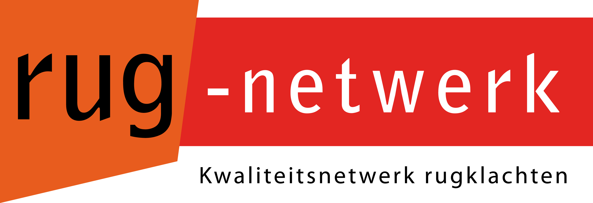

Feedback Visitatie 2018 - Tako
25 Maart 2019

Beste Rug-netwerker,
Allereerst willen wij u bedanken voor het deelnemen aan de visitatieronde afgelopen zomer. Voor een grotegroep was dit de eerste keer dat zij hieraan mee hebben gedaan. Daarnaast zijn er praktijken met meerervaring, zij deden voor de derde of zelfs een vierde keer mee. Het is daarom logisch dat er verschillen zijnontstaan.
In de onderstaande gegevens is te zien waar uw praktijkcode staat ten opzichten van het gemiddelde.Er staat tevens waar wij als netwerk naar toe willen: de norm (Groen).Dit is verwerkt in een stoplichtmodel.Er zijn drie categorieen: Groen, Oranje en Rood.Voor de normering wordt gebruik gemaakt van de 6 items weergeven in de onderstaande tabel.
| Item |
Beschrijving (per dossier) |
| 1 |
2 Dossiers per Therapeut = 100% |
| 2 |
Praktijktoets |
| 3 |
Dossiertoets |
| 4 |
2 meetinstrumenten (incl. begin- en eindmeting) |
| 5 |
Gebruik STarTBack |
| 6 |
Gebruik GPE |